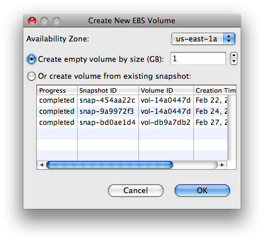
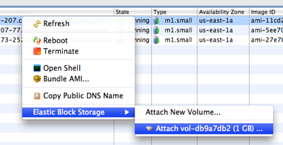

Elastic Block Storage is an easy to use, persistent, fault-tolerant storage option designed especially for EC2. You can create as many EBS volumes as you like, in any size from 1GB to 1TB. One of the great things about EBS volumes is that they look and act just like a standard hard drive to your EC2 instance. This means you have a lot of flexibility in how you set up and use your EBS volumes. This guide will walk you through a very simple, basic way to use EBS volumes, but many other configurations (ex: RAID, different file systems) are easy to set up as well.
Open the Elastic Block Storage view, right-click the volume list and select "New Volume...". You can select the availability zone in which to create your volume and how much storage space you want. When creating EBS volumes, keep in mind that instances can only attach EBS volumes in the same availability zone. If you have any existing volume snapshots, you can select one of them instead of specifying the size of a new volume.

You need to attach your new EBS volume to one of your instances before you can start using it. Open the EC2 Instances view and right-click a running instance in the same availability zone as your new EBS volume. At the bottom of the context menu you'll see the Elastic Block Storage sub-menu with a menu item to attach your new EBS volume to the selected instance. Notice that there's also another menu item to let you create and attach a new EBS volume all at once.

Go ahead and attach the EBS volume you just created to this instance. You'll see a dialog asking you what device you'd like to attach this volume as. If you're unsure about what to select, just keep the default, /dev/sdh.
Now that you've attached an EBS volume to your instance, you're almost ready to start using it. You've essentially plugged in a brand new hard drive into your instance. Before you can use it for storing data you'll need to format the file system on this new hard drive and mount the hard drive so that its contents are accessible.
The first time you use a new EBS volume you'll need to format the file system. EBS volumes act just like hard drives, so you aren't locked into a certain file system format; you can use anything you'd like. You can create a basic file system on an EBS volume by running 'mkfs /dev/sdh' logged in as root to your EC2 instance.
Every time you attach an EBS volume to an instance, you'll need to mount the volume so that the contents are accessible from the root file system. You'll typically want to create a directory in /mnt to serve as a mount point for your volume (ex: 'mkdir /mnt/myVolume'). Once that mount point is ready you can use the mount command to mount it (ex: 'mount /dev/sdh /mnt/myVolume').
Your new EBS volume is ready to store your data now. Any data that you write to /mnt/myVolume will be stored on your EBS volume, so if you terminate that instance, you can attach the same EBS volume to a new instance without losing any data. You can also easily create snapshots of your EBS volumes that are stored in Amazon S3. Just right-click your volume in the Elastic Block Storage view and select "Snapshot" from the context menu. Snapshots allow you to easily back up your data.